The majority of the screen is devoted to the display of the array of neurons and synapses—the network display. Colors represent the current membrane potential of the neurons or the weights of synapses. Labels within the neuron array are for reference and are typically not used for computation.
In general, the menus control the network files, Neuron Engine, and the display. The command bar has two sections, one for the network display and control and the other for Neuron Engine control. Status messages are displayed at the bottom of the screen.
The interface has been tested with a billion neurons, so being able to zoom to the desired location within the neuron array quickly is important.
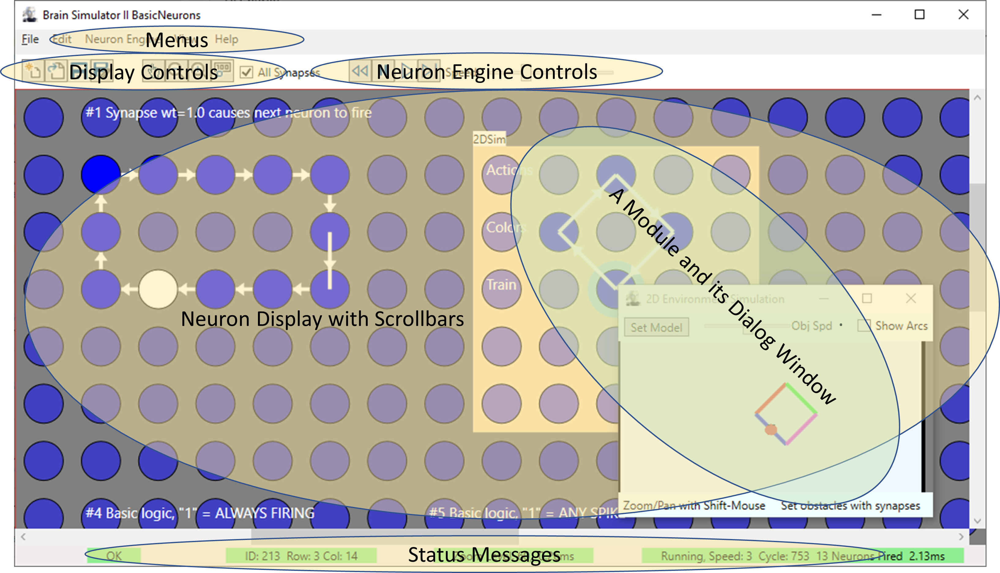
The overall layout of the Brain Simulator user interface is focused on the display of the neuron array. Menus let you load and save the neuron array to a file. In the command bar, one cluster controls the display and another controls the Neuron Engine.
Back to ContentsAs mentioned previously, networks are stored in files in XML format. You can think of the Brain Simulator as an editor for these files. With this thinking, all the file control is similar to that found in a text editor. When the program starts, it will default to displaying the neuron array which was last used. If that file isn’t accessible, a sample blank neuron array will be displayed.
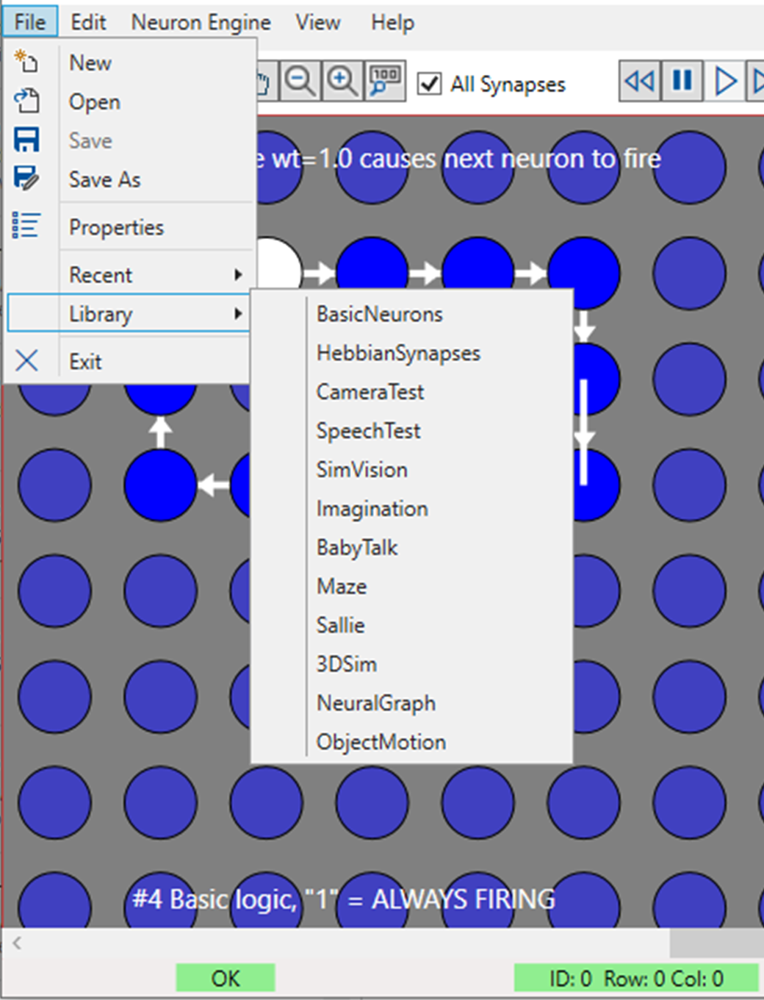
The “File” menu controls saving and restoring neuron networks as is detailed in this section. The “Library” section lists the networks included with the program.
To create a new file, use the “File | New” command to bring up the file creation dialog. The dialog will display the free memory on your computer and estimate the maximum size of network you can create. Like a word processor, creating a new file does not save it. You must subsequently perform a “File | Save” (or “Save As”) if you wish to subsequently retrieve your network.
In the New Neuron Array dialog box, the Rows and Columns numbers you enter define maximums for the network. You can increase these later but you cannot subsequently reduce the size of a network. On the other hand, you can create a new one of different size and use the clipboard functions to copy the network content from the original to this new file.
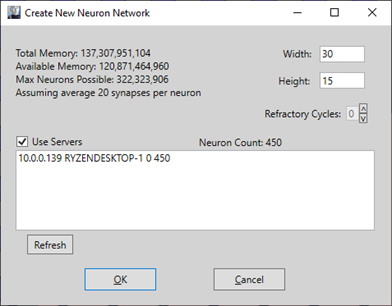
The dialog for creating new files lets you set the size of the network and (optionally) create random synapses for every neuron and configure the network to use multiple Neuron Servers.
You can initialize the refractory period for the network (this can be changed later on in the “Neuron Engine” menu). The refractory period defines the time base for the network and can be left at 0 for most networks. On this dialog, you may also set up the use of Neuron Servers, which is covered later in this chapter.
When you press OK, the new network will be created and displayed. With large networks (many millions of neurons), network allocation may take a significant amount of time and a progress bar will show the progress of allocating neurons and random synapses.
The commands, “File | Open”, “File | Recent”, and “File | Library” (which lists the network files included with the distribution) all load the related network file. If the network has “Notes”, they will be displayed (read-only) when the network opens unless you check the “Don’t show this again” checkbox. If you subsequently select “Edit | Notes”, the same notes will be displayed in an editable form and these edited notes will be saved with the network when it is next saved.
The “File | Properties” command will display a dialog with information about the current network. You can increase the number of rows or columns. Neurons are only “in use” if they are connected by at least one synapse or have a label.
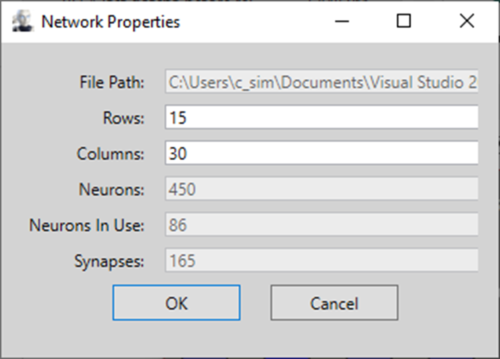
The File | Properties dialog displays basic information about the network.
When you close the program, you will be prompted to save the network file (except in the case of library networks) on the assumption that since this is a real-time processing program, the content will necessarily have changed. Library network files are installed in a read-only directory. If you would like to modify a library network file, you’ll need to use the “Save as” command to save it somewhere else.
Back to Contents
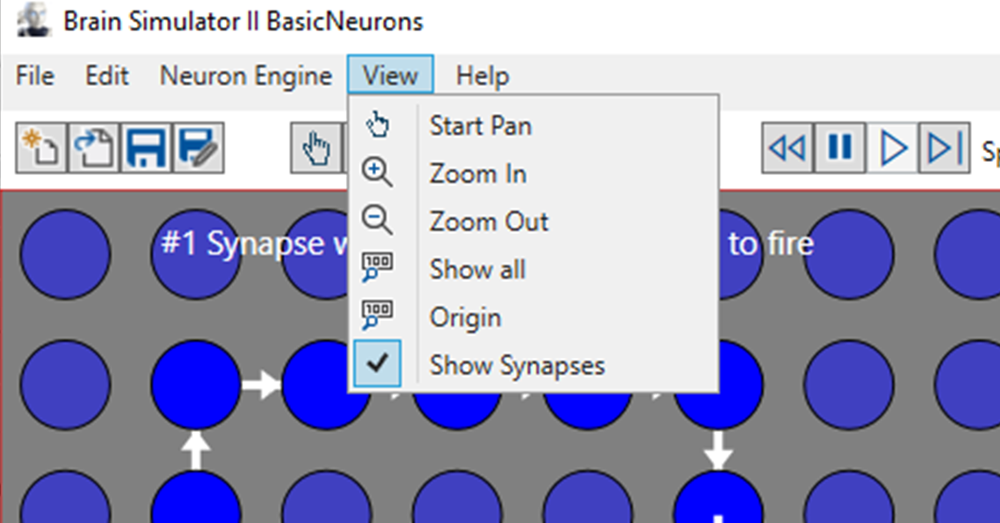
The “View” menu shows the commands for controlling the neuron display.
Neurons are displayed as disks or as rectangles or individual pixels depending on the display scale. Neurons are usually shown as disks in the figures in this text. As the display is zoomed out to show more neurons, such as for image processing, faster pixel and rectangle displays are used.
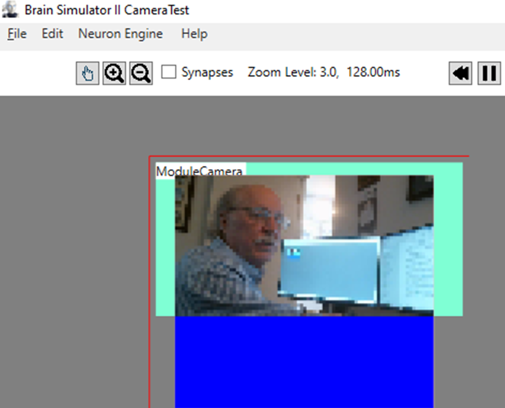
Showing the display of the Camera module when it is zoomed back to show many neurons. Each neuron may be a single pixel on the display. This also shows how, at very small scales, only the neurons within a selection box are displayed (described later).
Color codes for Neurons: Neurons are color-coded to indicate the state of their internal charge (membrane potential). A bright blue neuron has a charge of zero. A dull-blue neuron is not “in use” as it has no label and no synapses connecting to or from it. A firing neuron is white (an internal charge of 1.0 or more). In between, increasing neural charge goes through a rainbow from light blue to green, yellow, orange, and red. Neurons that have the Color model selected will instead display the color of their internal value.
A single neuron may be surrounded by a light-blue circle. It is the “current” neuron and will be the target of paste, move, or multiple-synapse actions which are described later.
Neurons with the LIF model will show “L=” followed by the leakage rate. Neurons with the Burst model will show “B=” followed by the number of spikes in each burst. Neurons with the Random model will show “R=” followed by the mean firing rate (in cycles). Neurons with the Always model will show “A=” followed by the firing rate (in cycles).
Enabling/disabling the Display of All Synapses: The checkbox labeled “All Synapses” and the menu command “View | Show synapses” control whether or not synapses are displayed for the entire network. If the display of synapses is not needed it should be disabled as a large number of synapses can slow display performance. When the display of all synapses is disabled, only synapses from individual neurons which have been selected to “Show Synapses” will show. For slight differentiation, these individually-selected synapses display in front of neurons while others are behind neurons.
Only synapses with either a source or target neuron within the current neuron display will be shown—a synapse connecting two off-screen neurons will not show even if it crosses the display area. For UI performance reasons, a maximum of 2,000 synapses will be displayed; others will be ignored. In this case, there will be a warning in the status bar indicating that there are too many synapses to display.
Synapses are displayed as a color-coded line with an arrowhead indicating the direction of the connection. A narrower arrowhead indicates that the synapse is “Fixed” (see below).
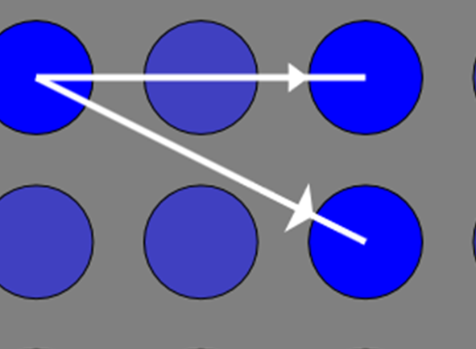
The wider arrow on the lower synapse indicates that its weight may be changed by the Neuron Engine. The weight of the upper synapse is fixed. These synapses are both white, indicating a weight of 1.0.
Color codes for positive synapse weights are the same as neuron colors. Negative (inhibitory) weights progress from light gray to black over the range of 0 to -1.
Back to ContentsAs the mouse cursor moves through the neuron display it can take one of several forms depending on its location and the function which will be performed.
|
|
Either Shift key is pressed or the Pan Display Control (button with the same icon) has been pressed. Drag to reposition the display. |
|
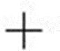 |
The mouse cursor is between neurons. Drag to select a group of neurons. Ctrl+drag to append another rectangle to the selection. You can create odd-shaped selections with multiple selection rectangles. Right-click to display the selection Context Menu. |
|
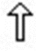 |
The mouse cursor is over a neuron. Click to fire the neuron and select it as the “current” neuron. Drag to create a synapse. Right-click to show the neuron context menu. |
|
|
The mouse cursor is over a synapse. Right-click to display the synapse context menu. Drag to move the Synapse target to a different neuron. |
|
|
The mouse cursor is on a module. Drag to move the module. Right-click to display the module context menu (see below). Similar direction arrows which appear when the mouse cursor is near the edge of a module allow you to resize the module by dragging the edge. |
Neuron arrays can be huge and have been tested with up to a billion neurons, so it is valuable to be able to display the area of interest easily. You can zoom and pan through the display several ways, with control buttons, scroll bars, and just the mouse. As the display scale changes, the amount of detail in the display changes to help keep the display-update speed as fast as possible. As you shrink the display, most neurons are not displayed and red lines form a grid with reference numbers which can be useful in locating specific areas of the network if it is large. Areas of neurons can be displayed selectively by adding a selection.
Any time the mouse cursor is in the neuron display, pressing either keyboard Shift key changes the mouse cursor to a hand to allow you to pan the display with the mouse.
The mouse wheel changes the display scale as do “Zoom In” and “Zoom Out” buttons and related menu commands. The “Zoom to Origin” button and related “View | Show All” and “View | Origin” menu commands can get you quickly to a desired display. The “Zoom to Origin” button toggles between “Show All” which shows the entire network” and “Show Origin” which shows the upper left corner of the network. On networks which will fit completely on the screen, these two displays may appear the same.
Like the pan function, the scrollbars at the bottom and right side of the neuron display allow you to reposition it horizontally or vertically. The arrow buttons at the ends of the scrollbars will move the display by one row or column of neurons at a time. The areas of the scrollbars between the thumb-track slider and the arrow buttons will move the display one screen-full at a time when clicked.
The neuron display updates itself independently of the Neuron Engine. This means that every update of the neuron display might represent multiple cycles of the engine. The display represents a snapshot of the neuron states at a specific point in time as the Neuron Engine is paused momentarily for the display to be updated. The elapsed time used to update the display is shown in milliseconds in the Status Bar and can be useful in learning how various display options change the display rate (all the parameters which control what items are displayed at which zoom levels are easily changed by programmers by editing the DisplayParams.cs source file).
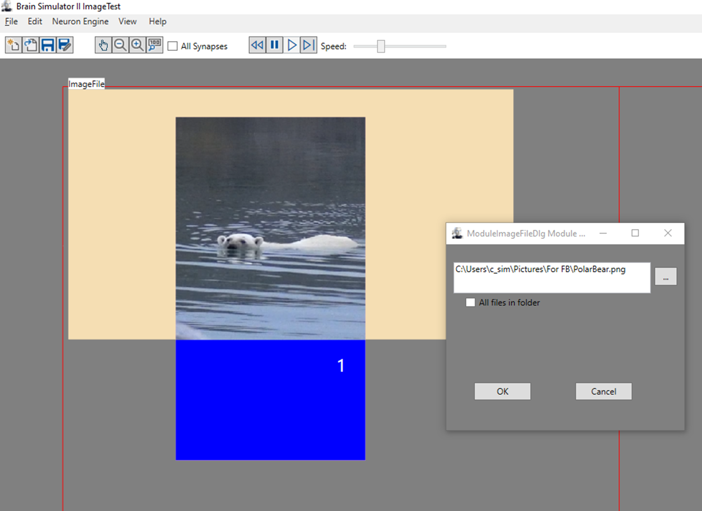
This display with a million neurons is zoomed smaller until only the reference grid and modules are seen. Each reference grid square is 250x250 or 62,500 neurons. The area of displayed neurons is created by adding a selection to the desired area. This can be useful if the neurons of a particular area represent an image or the overall firing pattern is useful. In this instance, the selection area overlaps ModuleImageFile which can read image data from a file. The surrounding neurons in the selection are bright blue, indicating a membrane potential of 0.0.
Back to ContentsIn general, the Neuron Engine runs continuously and there is no need to stop the engine to change the network (just as there is no need to stop your brain when various connections change within it). Internally, some functions (like save) will pause the engine while the process completes so the neuron state of the entire array is consistent.
The Neuron Engine speed is controlled internally by adding a delay at the end of each processing cycle. When the speed is set to zero (the slider is all the way to the left) the inter-cycle delay is 1 second. When the speed is set to 10 (the slider is all the way to the right), the delay is 0 so the Neuron Engine is running as fast as it can.
The Neuron Engine status display shows the speed, a cycle counter, the number of neurons which fired in the previous cycle, and how many milliseconds elapsed during an engine cycle, which is a moving average of the previous 100 cycles.
You can control the Neuron Engine either with the Controls or the Neuron Engine menu. “Reset”-ting the engine calls the Initialize method on all the modules in the network. Run and Pause start and stop the Neuron Engine. “Step” will execute a single cycle of the engine and will also pause it if it is running. “Speed” duplicates the function of the Speed Slider and introduces a delay between engine cycles.
“Refractory” changes the refractory period (in engine cycles) for all the neurons in the network. This should be changed cautiously as virtually all networks rely on a consistent refractory period and changing it will likely require corresponding changes to the network to keep it working.
“Threads” shows or changes the number of computing threads used by the Neuron Engine. This does not normally need to be changed but can be useful for optimizing Neuron Engine speed. Normally, the neurons in the array are distributed equally among the threads. Assuming an even distribution of firing and synapses, the computational load will be distributed evenly among the CPU cores. This doesn’t usually need to be changed except for high-performance testing. Since the UI thread is always running, it’s a good idea to set the thread count to one less than some multiple of the number of cores. If you have four cores and set the thread count to five, the first four threads can run in parallel but the fifth (orphan) thread will have to run when another has completed, potentially doubling the overall time it takes to process a cycle.
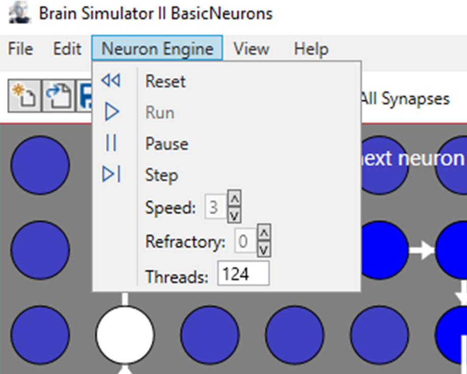
The Neuron Engine menu allows you to set the various engine parameters.
Back to ContentsClicking a neuron will cause it to fire. If it was firing continuously, clicking the neuron will cause it to stop firing. Double-clicking a neuron will disable or enable it.
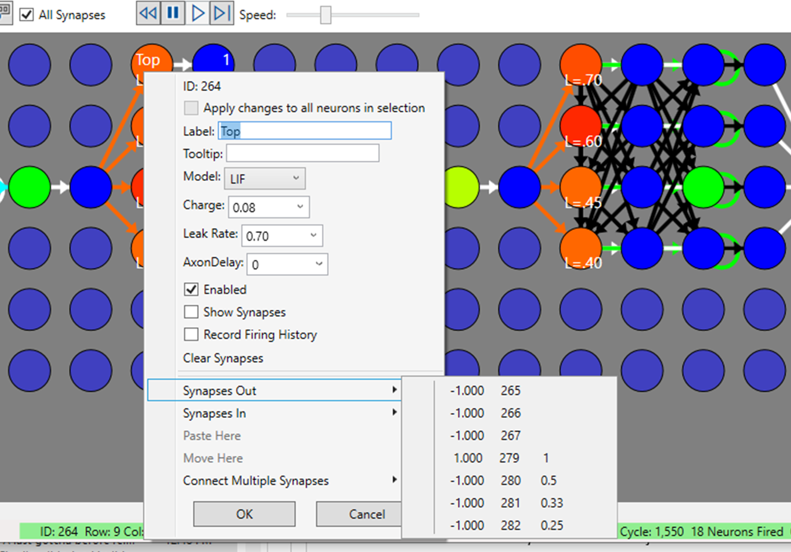
Right-click any neuron to display its context menu. Sub-menus show incoming and outgoing synapses. In the synapse menu, the first number is the weight, the second is the target neuron ID, and the third (if it exists) is the neuron label. In this case, the neuron labels are numeric too.
Right-click a neuron to display its context menu. Each neuron has a numeric ID, which is the location of the neuron within the neuron array.
The ID is followed by a checkbox which is only available if you have selected one or more rectangular groups of neurons (covered later). When this box is checked, any changes you make to this neuron will be applied to all the neurons in the selection. Only edited entries will be applied so, for example, you’d like to set the neuron charge to 0.08 on all the neurons but the charge on this neurons is already 0.08, you’ll need to change it to something else and back. Changed fields which will be applied show a green background.
Each neuron may carry a label. If you add a label, it can be just a few characters and will reside within the neuron disk or it can be longer, extending beyond the disk of the neuron to act as a notation in the network. Neuron labels are not typically used in computation but can be used to reference the neuron. Duplicate labels are allowed but a warning is displayed if you set a label which occurs elsewhere in the network. The neuron label may be used when editing a synapse or when pasting a selection as described later.
If the neuron label is set, you’ll also have the option of entering a tooltip. This text will show as your mouse cursor moves over the neuron. It is handy to be able to keep the neuron label to just a few characters and add a longer explanation to the tooltip if needed.
In the dropdown, you can select the model to be used for this neuron. This is followed by the neuron’s charge or membrane potential. You can edit it. There is a dropdown but you can key in any value you like. New values you enter will be added to the dropdown for future use.
For this and the following entries, numeric text entries must be syntactically correct. Illegal entries will show a red background and will be ignored. Numbers which are outside the usual range for the value will have a yellow background but will be set as requested. If you set a neuron charge to 1.23, for example, the system will set it, but the neuron won’t necessarily make use of the value outside the range of [0,1].
Below this, several model-specific parameters may be displayed which are described at the end of this section. In this case, the Leak Rate and Axon Delay are specific to the LIF model.
The checkbox, “Enabled,” can be used to temporarily disable a neuron or group of neurons.
The checkbox, “Show Synapses,” will display the synapses originating from this neuron. It does not override the “All Synapses” option which displays synapses regardless of the settings of individual neurons, or various limits in display size and synapse count which may prevent synapses from showing.
The checkbox, “Record Firing History” will begin recording for this neuron and will open the firing history window if it was not already open.
The “Clear Synapses” entry will remove all the incoming and outgoing synapses on this neuron.
Lists of synapses to and from this neuron are also available. Each list shows the weight and the target neuron (or source neuron in the case of an incoming synapse). The neuron’s label will be displayed if it has one. If you click in the area of the weight, it will open the synapse context menu so you can change the weight. If you click on the target neuron ID, the context menu for the target (or source) neuron will be opened. If that neuron is not visible or the new context menu wouldn’t fit at the neuron’s location, the neuron display will pan so that the target neuron is near the upper left of the screen.
The entry “Paste Here” will insert the content of the clipboard at this current location. The entry “Move Here” will move the content of the current selection to this current location. These are covered in detail under “Clipboard” below.
The “Connect Multiple Synapses” command has a submenu with three commands which act in concert with a selection. The command “Selection to Here” and “Here to Selection” will add a synapse with the current default characteristics between the current neuron and every neuron in the selection. The two commands differ in the direction of the synapses. The command “Mutual Suppression” will add a synapse of fixed weight -1 between every two synapses in the current selection.
For the following commands: If the “Apply changes to selection” checkbox is checked, the change will apply to all the neurons in the selection:
If you change the label, the new labels in the selection will be incremented from the label you set.
For neurons other than the IF and FloatValue models, custom parameters are available as follows:
Color model: the Charge is displayed as the hexadecimal value which is the ARGB representation of the color.
LIF model: the Leak Rate and Axon Delay are available. The Leak Rate is the fraction by which the charge will be reduced in each engine cycle. The Axon Delay is the number of engine cycles after a neuron fires when the synapses will deliver their weights to their target neurons.
Random model: the Mean is the number of engine cycles that the neuron will fire if the Std Dev is zero—the average firing rate. The Std Dev is the standard deviation of a Gaussian distribution of spike times around the mean. Setting the Std Dev to -1 will disable the random firing.
Burst model: The Count is the number of spikes that will be created and the Rate is the number of cycles between spikes.
Always model: The Delay is the number of Neuron Engine cycles between spikes.
Back to ContentsTo add a synapse, position the mouse cursor over the source neuron (note the up-arrow cursor) and drag to the target neuron. The synapse will be added with default characteristics (initially weight=1.0, Fixed). You can Undo an added synapse with “Edit | Undo” or Ctrl+z.
Right-click a synapse (when the cursor is ) to display the synapse context menu and change its characteristics. You can change its weight by selecting a new weight or entering a weight in the text box. You can press DEL on the keyboard or select “Delete” from the menu to delete the synapse.
The source and target neurons will be shown. If they have labels, these will appear, otherwise the neuron IDs will be shown. You can move a synapse by entering a new source or target neuron IDs or labels. In the event that there is more than one neuron in the network with the same label, the one with the lowest ID will be used.
When you display the context menu for any synapse, the characteristics of that synapse are set as the default characteristics that will subsequently be used when new synapses are added. This means that a quick way to add a synapse of a given weight is to right-click on a similar synapse to set the defaults, press ESC to close the menu, then add your new synapse.
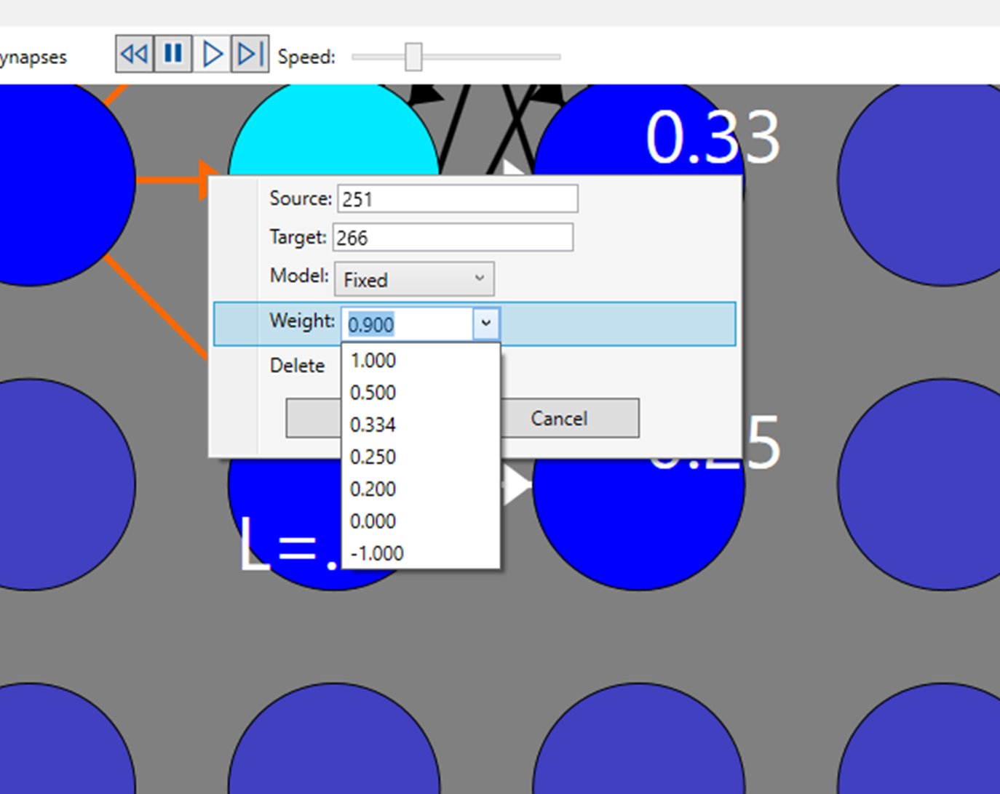
Right-click on a synapse to display the synapse context menu.
The “Model” dropdown selects the synapse model used by the Neuron Engine to alter the weight during execution. The Neuron Engine uses a lookup table to determine how much to change the weight.
You can set the weight directly by entering it numerically in the text box or by selecting one of the common weights on the dropdown. You can delete the synapses with the “Delete” command or by pressing the DEL key on the keyboard.
Back to ContentsThe clipboard is a powerful function based on the expectation that the brain or an AGI will consist of repeating patterns of neurons. The clipboard can be used to easily replicate areas of functioning neurons from one network to another.
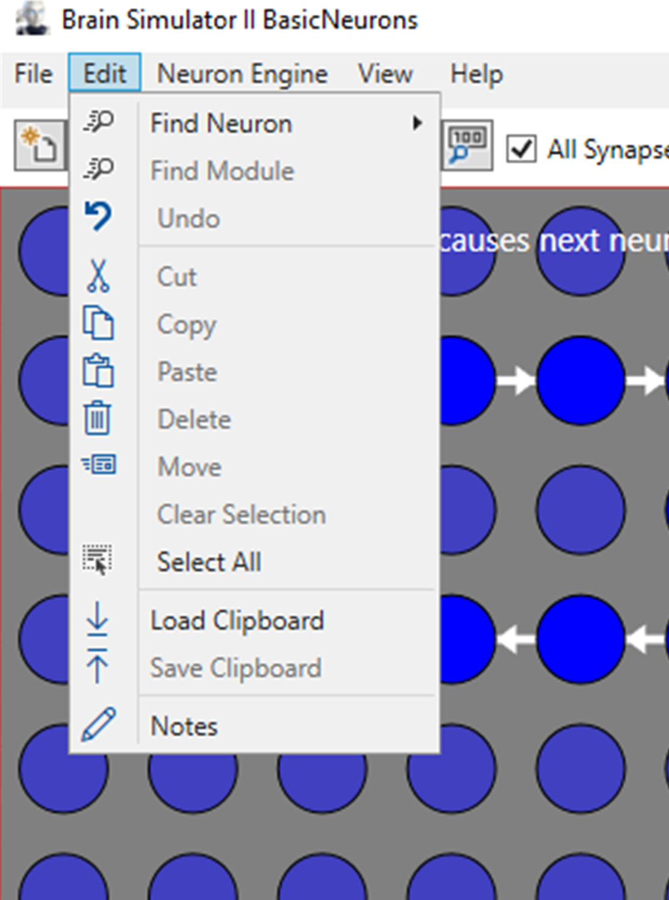
The “Edit” menu contains commands for accessing the clipboard. For larger networks, the “Find Neuron” and “Find Module” commands can be useful.
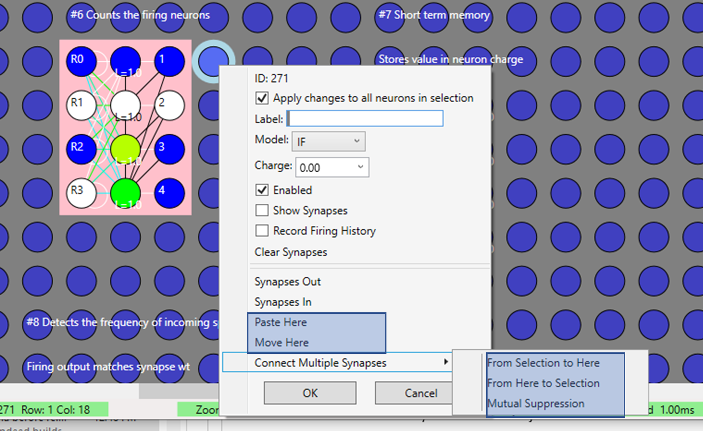
Using the clipboard makes it easy to create multiple copies of useful functioning clusters of neurons. The synapse pattern is copied along with the internal state of neurons so the pasted cluster can continue the computation of the cluster it was copied from.
When the mouse cursor is between neuron disks and is displayed as a cross, areas of neurons can be selected by dragging the mouse across the area. The selected rectangle is shown in pink. To make a complex selection shape, you can hold the Ctrl key and select multiple rectangular areas. These rectangles may overlap or be discontinuous but form a single selection.
Once a selection is made, several commands are available. As mentioned in the previous section, certain commands on individual neurons and synapses will be applied to all neurons and synapses in the selection. For example, you can change the model of all the neurons in a selection by changing the model of any neuron in the selection.
Several commands which act on the clipboard are available on the “Edit” menu, on the neuron’s context menu, and via keyboard shortcuts.
Copy: A selected area can be copied to the clipboard. The clipboard can be considered to be a network in its own right. Once copied to the clipboard, this smaller network can be pasted elsewhere into the same network, or a different network can be opened and the clipboard content can be pasted into a second network. The copy command can be performed with the “Edit | Copy” menu entry or with Ctrl-c. Synapses that cross in or out of the selection (“boundary neurons”) are included in the clipboard if the neurons they connect outside the selection have labels.
Delete: Clears all the neurons in the selection and removes any synapses which are sourced by or targeted to neurons in the selection. The Delete command can be performed with the “Edit | Delete” command or with the “Del” key.
Cut: this combines the Copy and Delete commands. The Cut command can be performed with the “Edit | Cut” menu entry or the Ctrl-x key.
Paste: This copies the content of the clipboard into the network at the location you specify. You will be warned if the paste will overwrite neurons in the target and the paste must fit within the bounds of the neuron array. The Paste (and Move below) command needs a destination location within the neuron array. This is provided automatically if the paste command is selected from the neuron context menu but to use the “Edit | Paste” or Ctrl-v command you must first set the target location by clicking a neuron which will be displayed with a light-blue ring. Synapses which cross the clipboard boundary will be replicated/stretched if the neuron outside the boundary has a label.
Move: The move command is slightly different in that it does not require copying to the clipboard. You can simply select a group of neurons and use the command “Edit | Move” or the “Move Here” on the neuron context menu. Unlike copy/paste, all synapses that cross in or out of the selection are stretched whether or not the neurons have labels. You can also drag a selection but if neurons in the selection collide with other neurons in use, you’ll be warned. If you proceed, these in-use neurons will become part of the selection and will be dragged along with it.
The content of the clipboard can be considered a network in its own right. The command “Edit | Save Clipboard” will prompt you for a file name and will save the content of the clipboard to a network XML file. That XML file can subsequently be opened and used as a network on its own. The command “Edit | Load Clipboard” will read a file into the clipboard for pasting into another network. Boundary neurons are not saved to a file.
The clipboard is local to the Brain Simulator and is not usable for passing data to other applications.
Back to ContentsIf your cursor is a motion arrow within a selection, you can right-click for the selection context menu. You can copy, cut, and delete the content of the selection. You can clear the selection.
“Mutual Suppression” will add synapses between all pairs of neuron in the selection with a weight of -1.0.
“Random Synapses” will add synapses with random targets and random weights to all the neurons in the selection. The number of synapses added to each neuron is controlled by the “Count” textbox which should be set first.
The Command “Reset Hebbian Weights” will set the weights to zero of all non-fixed-weight synapses which are sourced in the selection area. This can be useful for testing networks which store information in Hebbian weights.
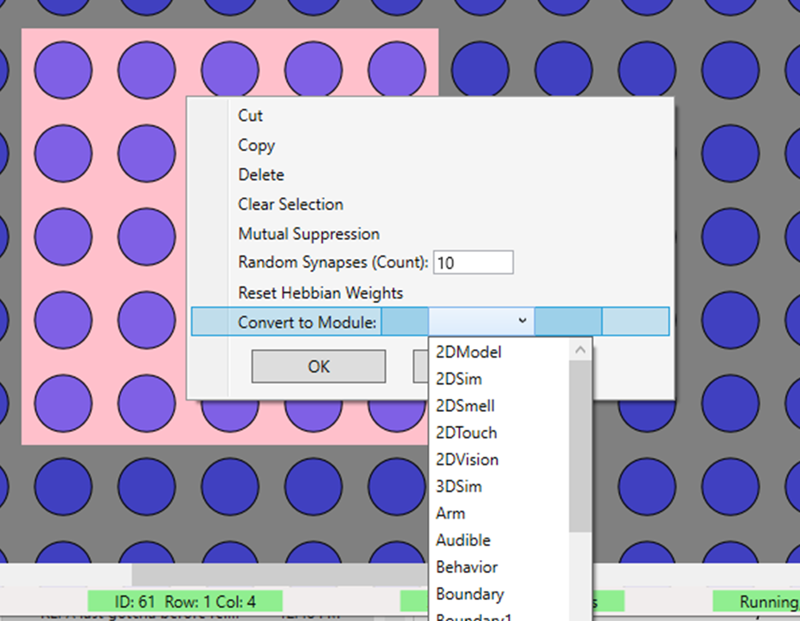
The context menu for a selection has a dropdown that allows converting a rectangular selection area into a module.
Lastly, a single selection rectangle can be converted to a module by selecting the module type from the dropdown list. The function of the module is defined by the software within the module itself (See Chapter 6 for a list of modules).
Once a module has been added to a network, the mouse cursor changes ins the area within the module (but outside neuron disks). The cursor changes into appropriate drag handles which can be used to move or change the size of the module.
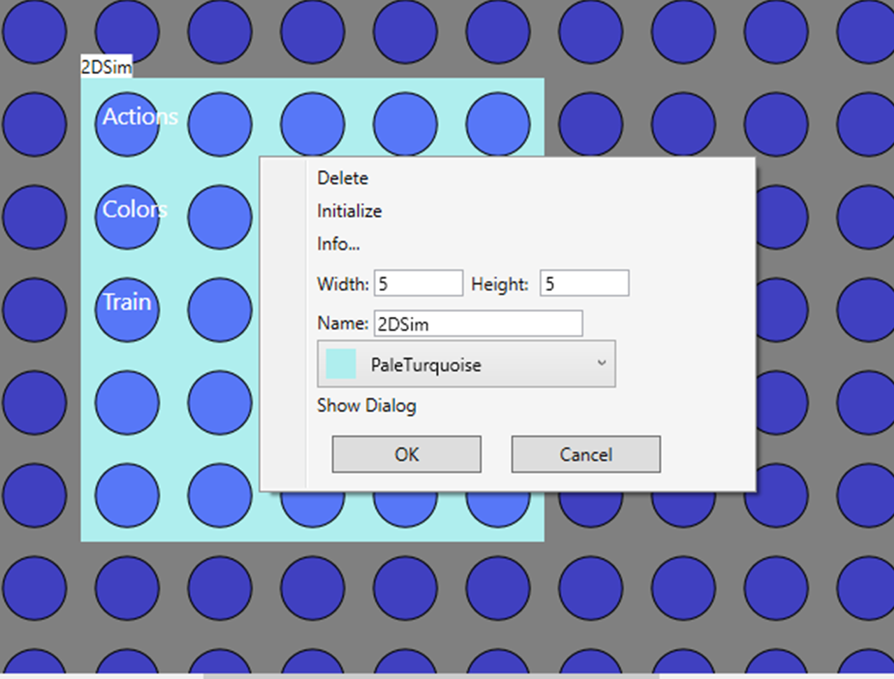
The context menu for a module.
You can right-click a module to bring up its context menu. From the context menu, the module can be deleted, initialized, or named. If the module has an internal description it can be displayed with “Info…”.
The dimensions of the module can be modified. This is the best way to create large modules with specific dimensions which would be difficult to set with the drag handles. Use caution because there is no check to prevent modules from overlapping each other which could lead to unpredictable results.
If the module has a dialog box, you can display it from the context menu. Each dialog is custom to the module.
Back to ContentsFiring history can be collected on any set of neurons. To add neurons to the firing history, check the “Record Firing History” checkbox in a neuron’s context menu. History will commence when one of the recording neurons fires. Then firing history will be collected continuously as long as the engine is running.
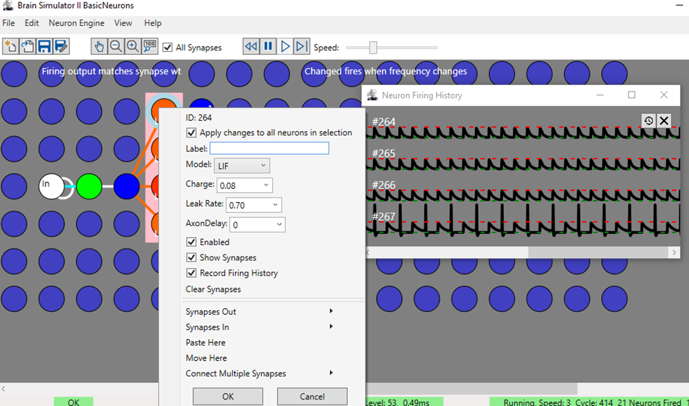
The Neuron Firing History window shows the value of the internal charge for the selected neurons in the form of a timing diagram. Labels at the left of traces show the neuron’s label, if it has one, or the neuron’s ID number.
To control the Firing History display window, you can use the buttons in the upper right to either remove all the previous firing history but continue recording or to clear all the firing and stop recording.
If the mouse cursor is within the Firing History window (with a normal arrow cursor), the mouse wheel can be used to expand the display. Once expanded, the scrollbar at the bottom of the window can be used to scroll through the content in the window, even when expanded data is still being collected. When the scrollbar is at the right-most edge of the window, live data is displayed as it is collected.
The traces in the window are labeled with the neuron ID or the neuron label if it has one. The order of the traces in the window can be controlled by dragging the labels to new locations.
The charge level of each neuron is recorded and displayed accurately but the waveform of the spikes themselves are synthesized.
Back to ContentsThe Neuron Server can be operated simultaneously on any number of computers on a local network. The IP addresses of the machines must all be in the same family (the first three fields of the IP4 addresses must be the same). One machine must operate the Brain Simulator II program to control the other servers and the control machine may also be a server. Servers may have different performance and resource characteristics and this should be taken into account when configuring the system.
Because of its use of the network, your computer’s firewall will need to be edited to allow this network traffic. If you are using Windows Firewall, there is an application called “SetupFirewall which will automatically make these changes. If you are editing on your own, you need to know that there are two applications which need to be allowed: BrainSimulator.exe and NeuronServer.exe. Both applications need to be able to send via UDP, both broadcasts and targeted messages. Neuron Server uses ports 49001, 49002, and 49003 while Brain Simulator uses ports 49002 and 49003.
There are two steps needed to use the Neuron Server. On each server machine, start the server program (NeuronServer.exe). On the Brain Simulator machine, use the “File | New” dialog to configure which neurons in the network will reside on which servers. Check the “Use Servers” checkbox and press “Refresh” to find all the Neuron Servers on the network. The servers will be listed in the text window and the neurons will be initially assigned to them by distributing them evenly. You can edit the textbox to assign the neurons differently if you choose.
As of the current release, server configuration information is not saved with the network and you can only use the New Network dialog box to set up server configurations. To load an existing network to multiple servers: Create a new with the correct neuron counts for the network to be loaded. Then load the network and it will use the configuration you just entered.
Performance capabilities and limitations: The Neuron Engine in the Neuron Server is identical to the one used in the Brain S imulator’s single-computer configuration. This means that the performance of the Neuron Engine will be identical to the non-server version for synapses that do not cross a machine boundary (and all neurons). Synapses that do cross a machine boundary will be substantially slower. Also, the overhead of multiple machine control adds a few milliseconds to each cycle, and the performance of the user interface is substantially reduced. See Chapter 13 on “Performance” for details.
Back to ContentsCtrl-z: Undo
Ctrl-a: Select all
Ctrl-x: Cut, copy to clipboard and delete from neuron array
Ctrl-c: Copy to clipboard
Ctrl-v: Paste from clipboard
Ctrl-m: Move neurons in selection area to target neuron
DEL: Delete neurons/synapses in selection
ESC: Close Selection or close context menu without saving
F1: Help Getting Started
Back to Contents
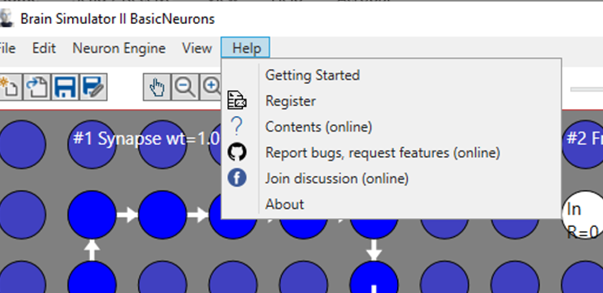
The Help menu shows many ways you can get support or contribute to the project.
Getting Started: Opens a browser window and displays the overview help file with suggestions for first-time users.
Register: Opens a browser window to the software registration page.
Contents (online): Opens a browser window with the online help content which includes this chapter.
Report bugs, request features (online): Opens a browser to the GitHub repository for the project. After you’ve created a GitHub user name, you can enter bugs or suggest features directly to the “Issues” database. You can download the source code too. If you want to contribute the project, request access to the code base.
Join Discussion (online): Opens a browser window to the Facebook BrainSim group page. Join the group for all the latest information.
About: Displays version and contributor information.
“Brain Simulator II Overview”
Back to Contents